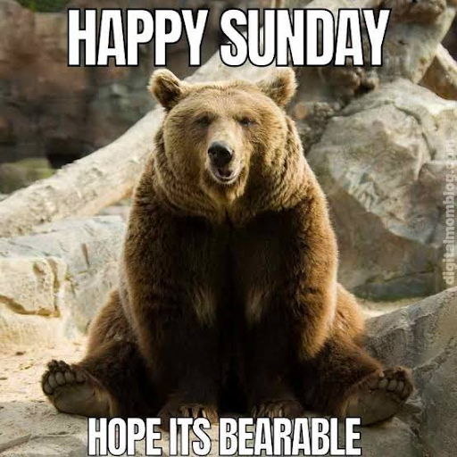

Happy Sunday! Thank you for supporting the Daily Bulletin project.
- Suggest improvements to the Daily Bulletin project.
- Unsubscribe if you no longer wish to receive emails from the Daily Bulletin project.
Wellbeing Inspirations
Want to contribute to a future Daily Bulletin? Share your inspirations to give everyone some morning wellbeing energy!
Meme of the Day

Shared by Lina
Delicious Dinings
| Day | Meal | Options |
|---|---|---|
| Sun | Brunch | Hot Breakfast |
| Dinner | Crispy Katsu Chicken | |
| Falafels 🌱 | ||
| Mon | Breakfast | Pancake / Waffle Bar 🌱 🌱 |
| Lunch | Chicken Gyros | |
| Veggie Gyros 🌱 | ||
| Dinner | Gnocchi Americano 🌱 |
The catering team would like to remind everyone to wash their hands before coming to the dining hall, and to refrain from eating in the servery area. Thank you!
Retrieved from Shared Weekly Menu. For reference only; accuracy not guaranteed.
Important Events
| Day | Time | Event | Location |
|---|---|---|---|
| Sun | 13:00–14:00 | Student Lane Swim | Pool |
| 14:00–15:00 | Student Swim | Pool | |
| 14:00–17:30 | Apple Day | Valley | |
| 15:00–16:00 | Student Female Swim | Pool | |
| 15:00–17:00 | Cinema Club | Tythe Barn | |
| 17:00–19:00 | Hot to Go | Moondance |
Retrieved from What's On This Week.
Today in History
- 1311 – The peerage and clergy of the Kingdom of England published the Ordinances of 1311 to restrict King Edward II's powers.
- 1776 – American Revolutionary War: A British fleet defeated American ships at the Battle of Valcour Island on Lake Champlain, but gave American forces enough time to prepare their defenses for the Saratoga campaign.
- 1890 – In Washington, D.C., the Daughters of the American Revolution was founded.
- 1984 – Aboard the Space Shuttle Challenger, astronaut Kathryn D. Sullivan became the first American woman to perform a space walk.
- 1987 – An estimated 750,000 people attended the "Great March" in Washington, D.C., to demand greater civil rights for the LGBT community.
Retrieved from Wikipedia.